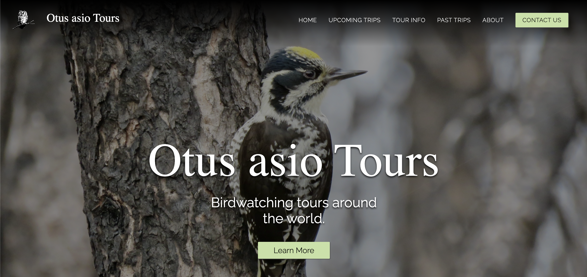

Overview
Otusasio Tours leads birdwatching trips to destinations around the world. The client already had a website, but he wanted something fresher, with a simple, responsive design that would help him promote upcoming tours and share more about his trips and his business. He also hoped the new site would become a home for his own photography, with images from his travels at the center of the experience.
The challenge
His photos were the heart of what he wanted to share, so the site needed to do more than show a few pictures. Images had to appear across every page, and each past trip needed its own gallery. At the same time, visitors still had to find upcoming tours quickly, read the details of each trip, and have just as smooth an experience on a phone as on a desktop.
Design first
Before writing any code, I designed a detailed mockup of every page in Adobe XD. Because the images mattered most to the client, I made sure each page showcased a variety of them, and I chose a more natural palette of greens and grays that suits a nature-focused business. The design was fully responsive, so it worked on mobile as well as desktop. Once the client reviewed and approved it, I moved on to the build.
What I built
I built every page as a static site using HTML, CSS, and JavaScript. A new page lets visitors browse all of the tours and click into any trip to see a summary, the dates, the trip leader, and the full itinerary. Each trip also includes a map of every location visited, which I created as a custom map in Google Maps and embedded into the page. The past trips page shows each trip as a card that links to its own page, with a photo gallery and a complete checklist for that trip. This gives the client a place to show off his photography and gives visitors a real sense of what a tour is like. To keep the site easy to maintain, the footer lists the first six upcoming trips, generated from a JavaScript object that stores each trip's name and link. Updating the list means editing that one object instead of changing every page.